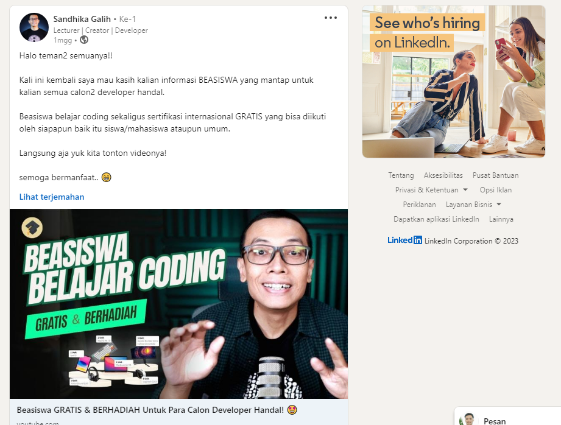

Kenapa Switch karir?
Pengalaman mengikuti program DevHandal dan menjadi seorang Certified Developer dari Alibaba
Cloud telah menjadi salah satu langkah paling menarik dan bermakna dalam perjalanan karir
saya. Sebagai seorang UI/UX Designer yang telah bekerja dalam bidang desain selama beberapa
tahun, langkah ini mungkin terdengar seperti perubahan yang drastis. Namun, perubahan ini
adalah langkah yang saya pertimbangkan dengan cermat, dan setelah menyelesaikannya, saya
merasa bahwa ini adalah keputusan yang sangat tepat.
Sebelum memutuskan untuk beralih ke frontend web development, saya telah bekerja sebagai
UI/UX Designer selama lebih dari 3 tahun. Meskipun saya sangat menikmati pekerjaan saya dan
senang menciptakan antarmuka yang menarik dan mudah digunakan, saya selalu merasa ada
sesuatu yang hilang. Saya ingin lebih memahami bagaimana hal-hal di balik layar bekerja.
Saya ingin memiliki kemampuan untuk membangun hal-hal yang saya desain, bukan hanya
merancangnya.
Semesta memberikan solusi
Ditengah kebingungan harus mulai belajari dari mana, Saya beruntung bisa melihat postingan pak Dika di Linkedin yang membawa saya ke program DevHandal yang diadakan oleh Codepolitan dan Alibaba Cloud. Saya memilih program ini karena reputasi baiknya dalam mengajarkan pemrograman web, karena fleksibilitasnya yang memungkinkan saya untuk belajar secara online dan juga DevHandal mengadakan Lucky Draw dengan hadiah utama Macbook Air M1 untuk para peserta yang rajin dan beruntung. Saya pun mendaftar dan memulai perjalanan baru ini dengan semangat yang tinggi.
Langkah yang tepat
Kursus pertama yang saya ambil di program DevHandal adalah AJAX dan Web API. Saya telah memiliki pemahaman dasar tentang HTML, CSS, dan Pemrograman dari perkuliahan dan pekerjaan saya sebagai UI/UX Designer, belajar AJAX dan API benar-benar merupakan tantangan baru bagi saya. Saya harus benar-benar memahami logika di balik bahasa pemrograman ini dan bagaimana cara menggunakannya untuk membangun aplikasi web yang dinamis
Selama proses belajar, saya merasa bahwa DevHandal benar-benar memberikan dukungan yang saya butuhkan. Materi pelajaran yang disajikan sangat terstruktur dan mudah dimengerti, dan instruktur selalu siap membantu jika saya mengalami kesulitan. Selain itu, komunitas yang ada di dalam program ini juga sangat membantu. Saya bisa berbagi pengalaman dan belajar bersama dengan teman-teman sekelas yang memiliki latar belakang beragam.

Setelah hampir 1 bulan belajar, saya merasa yakin dengan kemampuan JavaScript saya. Saya telah berhasil membangun berbagai proyek kecil, seperti halaman web interaktif dan aplikasi sederhana, yang memberi saya rasa percaya diri yang dibutuhkan untuk melangkah lebih jauh.
Saat itulah saya mendengar tentang kesempatan untuk mendapatkan sertifikasi Certified Developer dari Alibaba Cloud melalui program DevHandal. Ini adalah kesempatan yang sangat menarik bagi saya karena saya percaya sertifikasi ini akan menambahkan nilai yang signifikan pada karir saya sebagai seorang frontend web developer. Saya memutuskan untuk mengambil tantangan ini.
DevHandal juga memberikan akses ke berbagai sumber daya, termasuk modul pelatihan, ujian praktek, dan komunitas yang mendukung.
Saya juga sangat berterima kasih kepada instruktur DevHandal yang selalu siap membantu menjawab pertanyaan saya dan memberikan panduan yang berharga. Sertifikasi Alibaba Cloud akhirnya menjadi salah satu pencapaian yang paling membanggakan dalam karir saya.
What's next?
Sertifikasi ini bukan hanya sebuah kertas yang menggantung di dinding. Ini adalah bukti nyata bahwa saya memiliki keterampilan yang diperlukan untuk menjadi seorang frontend web developer yang kompeten. Saya merasa sangat bangga dengan pencapaian ini dan merasa lebih siap daripada sebelumnya untuk mengejar karir baru saya dalam pengembangan web.
Sekarang target saya adalah untuk menyelesaikan semua kursus di alur belajar Javascript Expert, lalu setelah saya menyelesaikan proyek akhir di akhir alur pembelajaran ini. Saya sudah siap dan percaya diri untuk dapat berkontribusi diindustri sebagai seorang Junior Frontend Developer.

Pengalaman mengikuti program DevHandal dan mendapatkan sertifikasi Certified Developer dari Alibaba Cloud adalah salah satu langkah terbaik yang pernah saya ambil dalam karir saya. Itu bukan hanya tentang mengubah pekerjaan, tetapi juga tentang mengubah hidup saya. Saya telah menemukan passion baru dan merasa lebih percaya diri dalam menghadapi tantangan teknis. Saya sangat berterima kasih kepada Codepolitan dan Alibaba Cloud atas kesempatan ini, dan saya sangat bersemangat untuk melihat apa yang akan saya capai selanjutnya dalam karir pengembangan web saya.